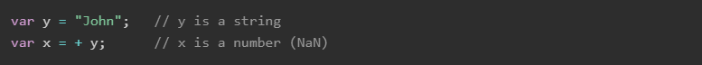

JavaScript là ngôn ngữ lập trình phổ biến dùng để tạo ra các trang web tương tác. Được tích hợp và nhúng vào HTML giúp website trở nên sống động hơn.
Khi JavaScript được tạo ra, ban đầu nó có tên khác: “LiveScript”. Nhưng Java đã rất phổ biến vào thời điểm đó, vì vậy người ta quyết định rằng việc định vị một ngôn ngữ mới là “em trai” của Java sẽ giúp ích.
Nhưng khi nó phát triển, JavaScript đã trở thành một ngôn ngữ hoàn toàn độc lập với đặc điểm kỹ thuật riêng của nó được gọi là ECMAScript và giờ đây nó không liên quan gì đến Java cả.
Ngày nay, JavaScript có thể thực thi không chỉ trên trình duyệt mà còn trên máy chủ hoặc trên thực tế trên bất kỳ thiết bị nào có chương trình đặc biệt gọi là công cụ JavaScript.
Có 3 cách để nhúng mã JavaScript
External Javascript là phương pháp mà trong đó, các đoạn code Javascript sẽ được lưu vào một tập tin có phần mở rộng là .js và kết nối với trang HTML thông qua phần tử thẻ script.
Internal Javascript là phương pháp mà trong đó, các đoạn code Javascript được đặt trong phần tử thẻ script của một trang HTML.
Inline Javascript là phương pháp mà trong đó, code Javascript sẽ được chèn trực tiếp vào phần tử HTML thông qua các thuộc tính HTML thuộc nhóm event (Ví dụ: onload, onlick, onmouseover, onmouseout...)
Tab Console hiển thị code JavaScript. Nó cung cấp cho bạn thông tin về các yếu tố tương tác trên một trang. Trong tab console, bạn có thể viết JavaScript để tương tác với trang web bạn đang xem và nó cũng cho phép bạn viết thông báo cho chính mình bằng JavaScript của các trang web bạn đang xây dựng, sau đó sẽ hiển thị trong tab console để cho biết rằng JS đã được thực thi
Có 8 kiểu dữ liệu
Chuyển đổi Numbers sang Strings
Phương thức toàn cục String() có thể chuyển numbers sang strings.
Phương thức toString() cũng thực hiện tương tự.
Chuyển đổi Booleans sang Strings
Phương thức toàn cục String() có
thể chuyển booleans sang strings
Phương thức toString() cũng thực hiện tương tự.
Chuyển đổi Dates sang Strings
Phương thức toàn cục String() có thể chuyển dates sang strings.
Phương thức toString() cũng thực hiện tương tự.
Chuyển đổi Strings sang Numbers
Phương thức toàn cục String() có thể
chuyển strings sang numbers.
Chuỗi chứa số (ví dụ : "3.14") chuyển sang numbers (3.14).
Chuỗi rỗng chuyển thành 0.
Mọi trường hợp còn lại chuyển sang NaN
(Not a Number).
Toán tử + có thể được sử dụng để chuyển một chuỗi sang số:

Nếu biến không thể được chuyển đổi, nó vẫn sẽ trở thành một số, nhưng với giá trị NaN (Not a Number):

Chuyển đổi Booleans sang Numbers
Phương thức toàn cục Number() cũng có thể chuyển booleans sang numbers.
Chuyển đổi Dates sang Numbers
Phương thức toàn cục Number() có thể được dùng để chuyển dates sang
numbers.
Khi JavaScript cố gắng hoạt động trên loại dữ liệu "wrong", nó sẽ cố gắng chuyển đổi giá trị thành loại "right".
Tự động chuyển sang string
JavaScript tự động gọi hàm toString () của biến khi hiển thị một đối tượng
hoặc một biến:
Numbers và booleans cũng được chuyển, nhưng điều này là không được nhìn thấy:
Bảng này thể hiện kết quả chuyển đổi các giá trị khác nhau trong Javascript sang Number, String, and Boolean:
Giá trị trong nháy kép biểu thị là giá trị chuỗi.
Giá trị đỏ biểu thị giá trị lập trình viên có thể không mong đợi.
Giống như nhiều ngôn ngữ lập trình khác, JavaScript có các biến. Các biến có thể được coi là các thùng chứa có tên. Bạn có thể đặt dữ liệu vào các vùng chứa này và sau đó tham khảo dữ liệu chỉ bằng cách đặt tên vùng chứa.
Để khai báo một biến ta sử dụng từ khóa const, let, var.
const được sử dụng để khai báo 1 hằng số, và giá trị của nó không thay đổi trong suốt chương trình.
let khai báo biến chỉ có thể truy cập được trong block bao quanh nó được xác định bằng cặp {}.
var khai báo biến có thể truy cập ở phạm vi hàm số hoặc bên ngoài hàm số, toàn cục.
Giống như ngôn ngữ khác, cách đặt tên biến của JS cũng phải tuân theo 1 số quy tắc sau :